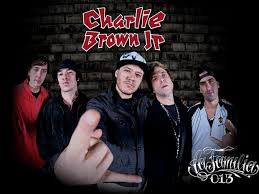

Sobre a Banda
Charlie Brown Jr. foi uma banda de rock brasileira de grande sucesso, fundada em Santos em 1992 por Chorão. Misturava rock, rap, reggae, hardcore e skate punk. Suas letras falam sobre juventude, crítica social, sentimentos e superação. As letras de Chorão eram inconfundiveis: diretas, conversacionais, cheias de gírias, relacionamentos amorosos, reflexões pessoais, fazendo as músicas parecerem um papo entre amigos e principamente atemporais.
Com raízes no skate, e forte conexão com publico jovem, incentivou milhares a andar de skate, assim como o Chorão andava, até mesmo no palco.